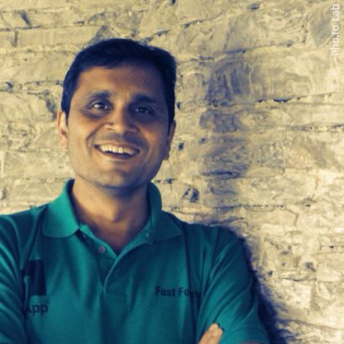

BEYOND THE HORIZONS
6:45PM - 8:30PM 5th october 2013 Venue: Room No-231,2nd Floor VMCC
Beyond the Horizons, an interaction with unconventional alumni who thought out-of-the-box and followed their dreams and took a different route. The session aimed at providing the students a subconscious support through the examples of young trailblazers, inspiring them to become the future torchbearers. IITs have proved that the holistic education it provides can not only make good engineers but also good musicians, sportsmen, photographers politicians, social workers, stand up comedians, directors and much much more. All it takes is the will power to realise your dream and the courage to take the road not taken. We brought alumni from all these walks of life to share their experiences and set an example as to how one can realise their true calling.
Speakers Profile:
Kritin Joshi

Kritin Joshi is co-founder and pro-bono consultant at BC Radio, a web-radio platform and a senior advisor at Desh Raag , also working as a consultant at Deloitte. He has earlier worked as a business technology analyst at Deloitte and Touche.
Ankur Pegu

Ankur Pegu is founder and director at Swasth India which runs health centers for the urban poor. He has also worked as a senior analyst at KPMG and as an analyst at Arthur Andersen.
Manish Sethi

Mr. Manish Sethi is currently Promoter/CEO of Dreamspace India, a one stop shop for Interior Design and Execution. He has earlier worked as Head-Solutions Line of Business at Dimension Data, Head Security Solutions at Dimension Data , Regional Manager at RAMCO Systems etc.